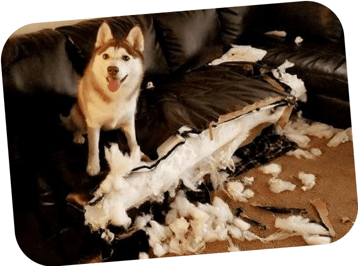

Snow Dogs

ACTIVITY
Ancient Times
Their daily task is to transport goods. A team of sled dogs may have three to two dozen dogs. Modern dog teams usually use vertical sets to connect and arrange dogs, and pairs of dogs are lined up in a row. Fur hunters would use toboggans in deep snow conditions to link their dogs in a single column, and the Polar Aboriginal dog teams were usually fanned, with each dog having only one of its own harnesses tied directly to the sled.
Has the ability to judge the terrain in the snow
Promoting "friendship" of working partners
Also acts as a "bodyguard"
Accompany their master
Responsibilities as a "Nanny"
Need to break the furniture to vent their energy that has nowhere to go
Today, they are more of a domestic dog. Based on their special appearance, they are
highly appreciated by people. Personality is also erratic as it is crossed with
other breeds, but there are also docile ones. They are a fierce-looking, but timid
medium-sized dog.
They are active and like to play with the shit shovel officer. They eat a lot and have a moulting season. Although they are large, they are not very good at guarding the house.
Morden Times
Accompany their master
Responsibilities as a "Nanny"
Need to break the furniture to vent their energy that has nowhere to go

Has the ability to judge the terrain in the snow
Promoting "friendship" of working partners
Also acts as a "bodyguard"
Modern Times
Today, they are more of a domestic dog. Based on their special appearance, they are
highlyappreciated by people. Personality is also erratic as it is crossed with other
breeds,
butthere are also docile ones. They are a fierce-looking, but timid medium-sized dog.
They are active and like to play with the shit shovel officer. They eat a lot and have a moulting season. Although they are large, they are not very good at guarding the house.
Accompany their master
Responsibilities as a "Nanny"
Need to break the furniture to vent their energy that has nowhere to go